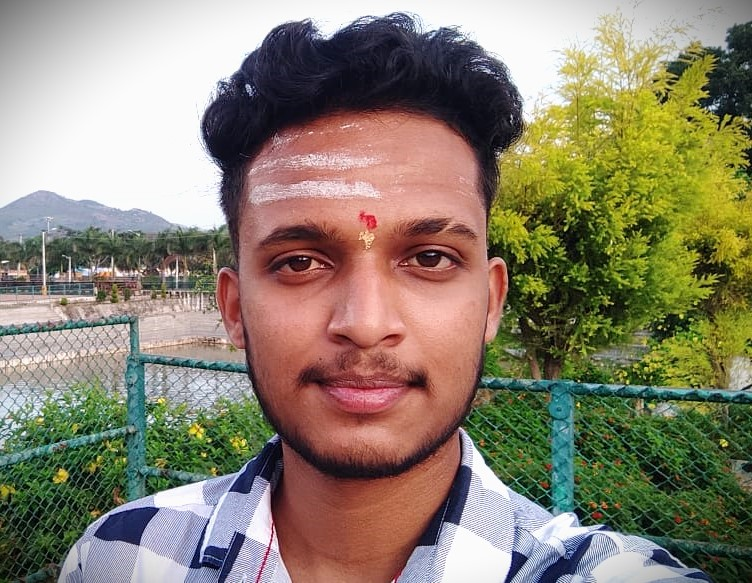

Sadashivamurthy S P

Objective
To secure a challenging position in a reputable organization to expand my learnings, knowledge, and skills. Secure a
responsible career opportunity to fully utilize my training and skills, while making a significant contribution to the
success of the company
Education
- Secondary school from St. John English Medium School, Gundlupet in 2018. Result – 90.4%
- Pre-university in PCMB from Sadvidya Composite PUC in 2020. Result – 76.5%
- B.E in Information Science and Engineering from Sri Venkateshwara College of Engineering (SVCE), Bangalore.
Aggregate – 7.076 GPA
| University |
Sem1 |
Sem2 |
Sem3 |
Sem4 |
Sem5 |
Sem6 |
Sem7 |
Sem8 |
| V.T.U |
6.65 |
8.0 |
6.63 |
7.38 |
6.72 |
Pursuing |
Impending |
Impending |
Academic Interests
Activities & Achivements
- Microsoft Certified:Azure AI Fundamentals.
- Actively participated in DSA, FSWD training programs.
- Participated in the webinar on ‘Hybrid Electric Vehicle Technology – Basics’ which was organised by Toyota
Kirloskar Motor Pvt.Ltd
- Participated in cultural, sports activity organised by the college
Other